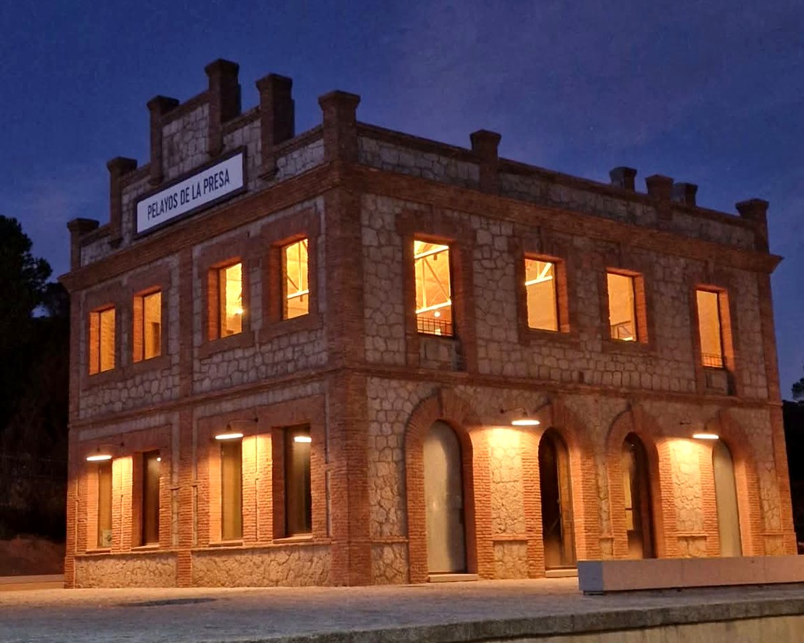
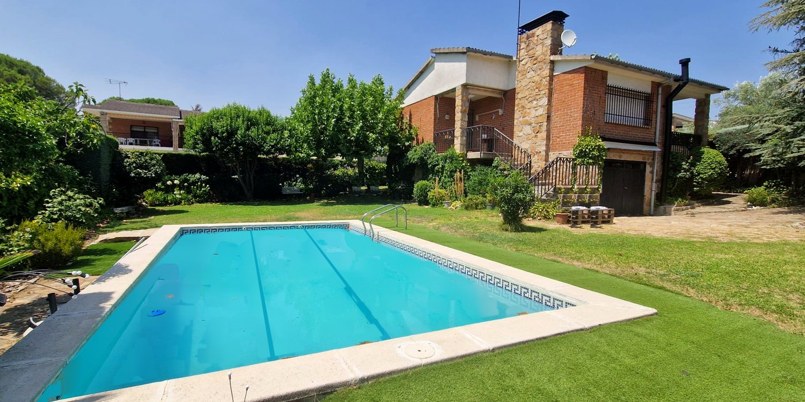

Dinos si vienes y si tienes alguna restricción alimentaria. Con un minuto nos ayudas mucho a organizarlo todo.
Confirmar asistenciaEstación de Pelayos de la Presa.
En la casa: Callejón Virgen del Pilar, 8. Cóctel, cena y fiesta.
Horarios detallados, próximamente.
← VolverA las 17:00. La antigua estación del pueblo, hoy restaurada.

Callejón Virgen del Pilar, 8 · Pelayos de la Presa

Tren a Madrid (Atocha o Chamartín) y desde allí autobús 551 o coche. Información sobre transporte organizado, próximamente.
← VolverAlgunas opciones en el propio Pelayos de la Presa, a un paso de la casa y de la estación:
Bungalows de madera para 2, 4 y 6 personas y mobile homes para 4 y 6, con baño propio y porche; piscina. Junto al pantano de San Juan.
Ver webVillas independientes con dos habitaciones dobles y sofá cama, patio privado, jardines y piscina. Av. del Arquitecto García Benito, 6.
Ver webIremos añadiendo más opciones a medida que vayamos hablando con otros alojamientos para que reserven plazas para la boda.
← VolverTodas las estaciones de este tren, desde la primera hasta la próxima parada.
Un Erasmus, una ciudad pequeña y dos personas que no se conocían de nada.
Pizza, caos y la certeza de que aquello iba en serio.
De vuelta en casa, a 600 km. Trenes, aviones y fines de semana que se hacían cortos.
Por fin sin distancia.
Nuestra primera casa.
Decidimos comprar nuestra furgo y empezar a viajar.
Y empezamos a escalar juntos.
Tocó volver a distanciarnos para conseguir nuestros objetivos.
Apoyándonos y disfrutando. ¡A darlo todo!
Destino: ¡nuestra boda! El único tren para toda la vida.
Un álbum compartido para todas las fotos y vídeos del día. Sube las tuyas y descárgate las que quieras; cuantas más, mejor.
Para subir fotos hace falta una cuenta de Google; para verlas y descargarlas, no.
Abrir el álbumDéjanos unas palabras para el viaje: un recuerdo, un consejo, un deseo. Las leeremos nosotros dos y las guardaremos para siempre.
Escribir una dedicatoriaLa música de la fiesta la hacemos entre todos. Añade la canción (o las canciones) que no pueden faltar en nuestra lista colaborativa de Spotify.
Al abrir el enlace, Spotify te pedirá unirte como colaborador; acepta y ya podrás añadir canciones. Hace falta una cuenta de Spotify (la gratuita sirve).
Añadir canciones